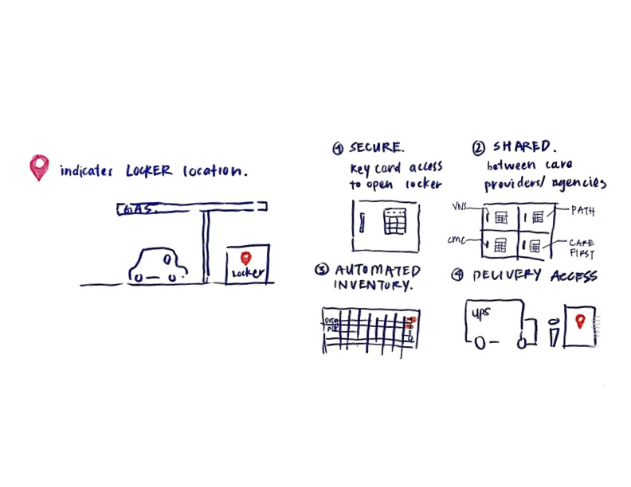
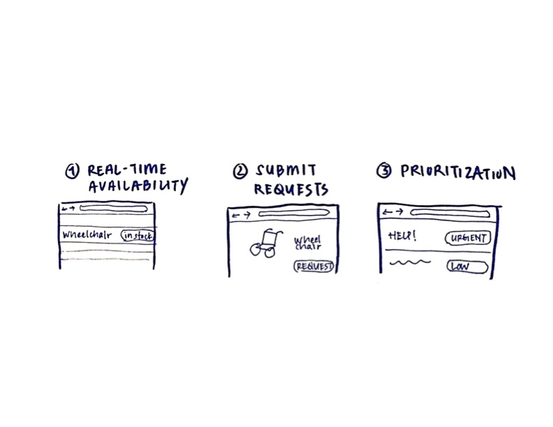

Delivering palliative care in rural regions
Designing for resilience and collaboration
Tompkins and Cortland counties, NYRole: Student Research
In 2019, state funding was changing for palliative care in New York, and would now favor fewer, larger grants shared between providers in a given region. Providers in two rural counties requested assistance from our graduate program to propose design solutions addressing long-standing challenges suitable for this new, more collective funding model.
To identify the primary challenges facing local agencies, our team of two students toured facilities, interviewed employees across multiple roles, reviewed the published academic literature, and identified new models and programs that had been successfully implemented in similar contexts. We highlighted the three problems where the published literature and our own collected data most strongly converged: long travel times, unreliable access to supplies, and the loss of collected knowledge (and subsequent challenges in onboarding new employees) due to high turnover.
We documented all these findings in a report provided to our clients and presented our research in person, giving us a chance to ask if we’d identified the correct problems, and giving our clients a chance to reflect back what they’d heard.
The Design Process
From the feedback provided in our second presentation to the clients, we identified three strategies to develop further, then met with intended users and showed them sketches of our concept designs to determine whether we were moving in the right direction at this early stage. Plans were already underway to implement one of our proposed designs, so we scrapped it to focus on the remaining two. When discussing technology, we learned that our clients preferred a tablet-based solution; tablets offered familiar interfaces for employees and their design made it easier to share/show information with patients and their families.
|  |  |
|---|
In our final presentation to clients, we provided an overview of our research and design process and the decisions leading to the development of our two designs. We then walked the clients through the features of our designs and presented our recommendations for building and implementation.
The Solutions
To address the dual challenges of long travel times and unreliable access to medical supplies(due to the scarcity of retailers and short business hours) we proposed a distributed network of secure storage lockers, accessible to employees of multiple agencies 24/7. If successful, we’d expect to see shorter driving times, fewer cases of being unable to provide patients with needed supplies, and nurses no longer using their car trunks as spare pharmacies.

|

|
|---|
We also designed a centralized platform for accessing what cannot be stored in lockers: certain medicines, rented equipment, and para-services. Hunting these down can consume valuable staff time, and much of this acquired knowledge can be lost when employees turn over.

|

|
|---|
Reflecting on the Process
A particular challenge of this project stemmed from its open range: we weren’t designing or one agency, one space, or one interaction, but multiple; and we weren’t designing for an immediate solution, but rather planning a longer-term one. There was great freedom in this, but it required that we create our own anchor. We also had access to seasoned palliative care directors throughout this process who have spent years thinking about these challenges — designers are not often so lucky. Yet at the same time, due to obvious privacy concerns, I wasn’t able to do as much observation or shadowing of front-line staff as I would have liked; I know we’d benefit especially from observing the provisional, imperfect, but works-for-now solutions that employees have already created.